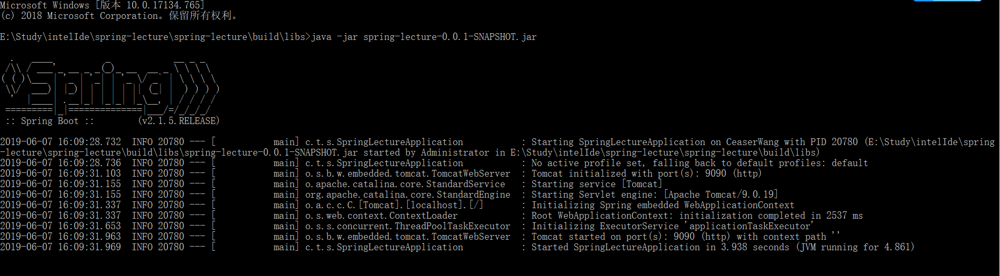

------------------------------------------------------------ Tasks runnable from root project ------------------------------------------------------------
Application tasks ----------------- bootRun - Runs this project as a Spring Boot application.
Build tasks ----------- assemble - Assembles the outputs of this project. bootJar - Assembles an executable jar archive containing the main classes and their dependencies. build - Assembles and tests this project. buildDependents - Assembles and tests this project and all projects that depend on it. buildNeeded - Assembles and tests this project and all projects it depends on. classes - Assembles main classes. clean - Deletes the build directory. jar - Assembles a jar archive containing the main classes. testClasses - Assembles test classes.
Build Setup tasks ----------------- init - Initializes a new Gradle build. wrapper - Generates Gradle wrapper files.
Documentation tasks ------------------- javadoc - Generates Javadoc API documentation for the main source code.
Help tasks ---------- buildEnvironment - Displays all buildscript dependencies declared in root project 'spring-lecture'. components - Displays the components produced by root project 'spring-lecture'. [incubating] dependencies - Displays all dependencies declared in root project 'spring-lecture'. dependencyInsight - Displays the insight into a specific dependency in root project 'spring-lecture'. dependencyManagement - Displays the dependency management declared in root project 'spring-lecture'. dependentComponents - Displays the dependent components of components in root project 'spring-lecture'. [incubating] help - Displays a help message. model - Displays the configuration model of root project 'spring-lecture'. [incubating] projects - Displays the sub-projects of root project 'spring-lecture'. properties - Displays the properties of root project 'spring-lecture'. tasks - Displays the tasks runnable from root project 'spring-lecture'.
Verification tasks ------------------ check - Runs all checks. test - Runs the unit tests.
Rules ----- Pattern: clean<TaskName>: Cleans the output files of a task. Pattern: build<ConfigurationName>: Assembles the artifacts of a configuration. Pattern: upload<ConfigurationName>: Assembles and uploads the artifacts belonging to a configuration.
To see all tasks and more detail, run gradlew tasks --all
To see more detail about a task, run gradlew help --task <task>
BUILD SUCCESSFUL in 2s 1 actionable task: 1 executed
【bootJar - Assembles an executable jar archive containing the main classes and their dependencies.】 这里就是将整个工程打包，生成一个自包含的jar包。 我们可以将当前工程下的build/libs下的jar包删除，然后执行： ./gradlew bootJar 就会重新生成jar包。jar包名字：工程名字-版本号.jar,这个jar包我们可以直接用java运行： 
这个jar是一个自包含的，里边包含了运行的所有依赖，使用jar命令对其解压，查看内部有哪些内容：
1 2 3 4
jar -xvf spring-lecture-0.0.1-SNAPSHOT.jar BOOT-INF META-INF org
Launcher for JAR based archives. This launcher assumes that dependency jars are included inside a /BOOT-INF/lib directory and that application classes are included inside a /BOOT-INF/classes directory.
/** * Launch the application. This method is the initial entry point that should be * called by a subclass {@code public static void main(String[] args)} method. * @param args the incoming arguments * @throws Exception if the application fails to launch */ 启动一个应用，这个方法应该被初始的入口点，这个入口点应该是一个Launcher的子类的 public static void main(String[] args)这样的方法调用 protected void launch(String[] args) throws Exception { JarFile.registerUrlProtocolHandler();//不重要略过，只是注册一些关于url的属性 //构建一个类加载器，我么先看一下getClassPathArchives方法做了什么 ClassLoader classLoader = createClassLoader(getClassPathArchives()); launch(args, getMainClass(), classLoader); }
getClassPathArchives()：
1 2 3 4 5 6 7
/** * Returns the archives that will be used to construct the class path. * @return the class path archives * @throws Exception if the class path archives cannot be obtained */ Launcher的一个抽象方法，返回用来构建class path的归档文件 protected abstract List<Archive> getClassPathArchives() throws Exception;
/** * Returns nested {@link Archive}s for entries that match the specified filter. * @param filter the filter used to limit entries * @return nested archives * @throws IOException if nested archives cannot be read */ 根据过滤器filter返回嵌套的归档文件 List<Archive> getNestedArchives(EntryFilter filter) throws IOException;
getNestedArchives实现类JarFileArchive：
1 2 3 4 5 6 7 8 9 10 11
@Override public List<Archive> getNestedArchives(EntryFilter filter) throws IOException { List<Archive> nestedArchives = new ArrayList<>(); // JarFileArchive实现了 Iterable<Archive.Entry> for (Entry entry : this) { if (filter.matches(entry)) { nestedArchives.add(getNestedArchive(entry)); } } return Collections.unmodifiableList(nestedArchives); }
ExecutableArchiveLauncher的对isNestedArchive的抽象： /** * Determine if the specified {@link JarEntry} is a nested item that should be added * to the classpath. The method is called once for each entry. * @param entry the jar entry * @return {@code true} if the entry is a nested item (jar or folder) */ 判断指定的JarEntry是不是一个嵌套的，如果是嵌套的需要添加到classpath下边，这个方法对于每个entry只被调用一次。 protected abstract boolean isNestedArchive(Archive.Entry entry);
/** * Create a classloader for the specified archives. * @param archives the archives * @return the classloader * @throws Exception if the classloader cannot be created */ // 为指定为归档文件创建类加载器，archives是我们拿到的所有的要加载的归档，返回一个spring定义的一个自定义加载器 protected ClassLoader createClassLoader(List<Archive> archives) throws Exception { List<URL> urls = new ArrayList<>(archives.size()); for (Archive archive : archives) { urls.add(archive.getUrl()); } //将所有归档文件的url统一放在一个集合里边 return createClassLoader(urls.toArray(new URL[0])); }
/** * Create a classloader for the specified URLs. * @param urls the URLs * @return the classloader * @throws Exception if the classloader cannot be created */ //为指定的url创建一个类加载器 protected ClassLoader createClassLoader(URL[] urls) throws Exception { //自定义类加载器需要指定父加载器，getClass()是Launcher.clas 得到Launcher类的类加载器，即appClassLoader，系统类加载器 return new LaunchedURLClassLoader(urls, getClass().getClassLoader()); }
LaunchedURLClassLoader继承了URLClassLoader：
1 2 3 4 5 6 7 8 9
/** * Create a new {@link LaunchedURLClassLoader} instance. * @param urls the URLs from which to load classes and resources * @param parent the parent class loader for delegation */ public LaunchedURLClassLoader(URL[] urls, ClassLoader parent) { //直接调用了URLClassLoader的构造器 super(urls, parent); }
URLClassLoader的说明： This class loader is used to load classes and resources from a search path of URLs referring to both JAR files and directories. Any URL that ends with a ‘/‘ is assumed to refer to a directory. Otherwise, the URL is assumed to refer to a JAR file which will be opened as needed. The AccessControlContext of the thread that created the instance of URLClassLoader will be used when subsequently loading classes and resources. The classes that are loaded are by default granted permission only to access the URLs specified when the URLClassLoader was created. 这个类加载器用来加载类和资源，这些资源是通过搜索一个jar文件或者一个目录，任何一个以“/”结尾的会认为是一个目录，否则会认为是一个jar文件。
/** * Launch the application given the archive file and a fully configured classloader. * @param args the incoming arguments * @param mainClass the main class to run * @param classLoader the classloader * @throws Exception if the launch fails */ protected void launch(String[] args, String mainClass, ClassLoader classLoader) throws Exception { //当前线程的上下文类加载器模式是系统类加载器，此处将线程山下文类加载器设置为spring自定义的LaunchedURLClassLoader //此处是set了LaunchedURLClassLoader，后边在某个时刻一定会get出来使用，去加载类，惯用套路 Thread.currentThread().setContextClassLoader(classLoader); createMainMethodRunner(mainClass, args, classLoader).run(); }
/** * Create the {@code MainMethodRunner} used to launch the application. * @param mainClass the main class * @param args the incoming arguments * @param classLoader the classloader * @return the main method runner */ //创建一个MainMethodRunner用来驱动运用 protected MainMethodRunner createMainMethodRunner(String mainClass, String[] args, ClassLoader classLoader) { return new MainMethodRunner(mainClass, args); }
MainMethodRunner的doc： Utility class that is used by Launchers to call a main method. The class containing the main method is loaded using the thread context class loader. 工具类，用来执行一个main方法，包含main方法的类是由线程上下文类加载器加载（线程山下文类加载器是LaunchedURLClassLoader）